Witte Software® https://www.modbustools.com
2026-05-06
1. Modbus Poll
Modbus Poll is an easy-to-use Modbus master simulator developed for many purposes. Among them:
-
Designers of Modbus slave devices who need quick and easy testing of protocol interfaces
-
Automation engineers who need to test Modbus devices or networks on site
-
Service engineers who want to read or change specific service data from a device
-
Modify Modbus registers in a slave device
-
Log data from Modbus devices
-
Troubleshooting and compliance testing
1.1. System Requirements for Modbus Poll
- Hardware Requirements
-
Any PC running Windows 10/11
- Operating System Requirements
-
All Windows versions from Windows 7 to Windows 11 are supported.
Modbus Poll version 7 runs on Windows XP.
1.1.1. Silent Install
A silent install requires no user intervention and has no user interface. The user doesn’t see any dialog and isn’t asked any questions.
Use the command line /S switch.
1.2. End-User License Agreement
You should carefully read the following terms and conditions before using Modbus Poll. Unless you have a different license agreement signed by Witte Software, your use of this software indicates your acceptance of this license agreement and warranty. If you do not accept these terms you must cease using this software immediately.
Copyright.
Modbus Poll ("The Software") is copyright 2002-2026 by Witte Software, all rights reserved.
Evaluation and Registration.
This is not free software. You are hereby licensed to use the Software for evaluation purposes without
charge for a period of 30 days.
If you use the Software after the 30-day evaluation period a registration fee is required.
Unregistered use of the Software after the 30-day evaluation period is in violation of U.S. and international copyright laws.
One registered copy of the Software may either be used by a single person who uses the software personally on one or more computers, or installed on a single computer used by multiple people, but not both.
For information on order and pricing, please visit https://www.modbustools.com/order.html
Modbus Poll licenses are perpetual. Once you buy a license to a specific major version, and as long as you abide by the license agreement, you can use that version forever with no additional cost.
Distribution.
Provided that you do not include your License Key you are hereby licensed to make copies of the Software;
give exact copies of the original to anyone; and distribute the Software in its unmodified form via
electronic means. You are specifically prohibited from charging for any such copies.
LIMITED WARRANTY.
THE SOFTWARE IS PROVIDED AS IS AND WITTE SOFTWARE DISCLAIMS ALL WARRANTIES
RELATING TO THIS SOFTWARE, WHETHER EXPRESSED OR IMPLIED, INCLUDING BUT NOT LIMITED TO ANY IMPLIED
WARRANTIES OF MERCHANTABILITY AND FITNESS FOR A PARTICULAR PURPOSE.
LIMITATION ON DAMAGES.
NEITHER WITTE SOFTWARE NOR ANYONE INVOLVED IN THE CREATION, PRODUCTION, OR DELIVERY OF THIS SOFTWARE SHALL
BE LIABLE FOR ANY INDIRECT, CONSEQUENTIAL, OR INCIDENTAL DAMAGES ARISING OUT OF THE USE OR INABILITY
TO USE SUCH SOFTWARE EVEN IF WITTE SOFTWARE HAS BEEN ADVISED OF THE POSSIBILITY OF SUCH DAMAGES OR
CLAIMS. IN NO EVENT SHALL WITTE SOFTWARE’S LIABILITY FOR ANY DAMAGES EXCEED THE PRICE PAID FOR THE
LICENSE TO USE THE SOFTWARE, REGARDLESS OF THE FORM OF CLAIM. THE PERSON USING THE SOFTWARE BEARS
ALL RISK AS TO THE QUALITY AND PERFORMANCE OF THE SOFTWARE.
2. Modbus Poll Features
2.1. Connections
Modbus Poll reads from and writes to devices using:
-
Modbus RTU or ASCII over RS-232 or RS-485 networks. (a USB/RS-232/RS-485 Converter can be used)
-
Modbus TCP/IP
-
Modbus/TCP Security
-
Modbus Over TCP/IP. (Modbus RTU/ASCII encapsulated in a TCP packet)
-
Modbus UDP/IP
-
Modbus Over UDP/IP. (Modbus RTU/ASCII encapsulated in a UDP packet)
2.2. Supported Modbus Functions
-
01 (0x01) Read Coils
-
02 (0x02) Read Discrete Inputs
-
03 (0x03) Read Holding Registers
-
04 (0x04) Read Input Registers
-
05 (0x05) Write Single Coil
-
06 (0x06) Write Single Register
-
08 (0x08) Diagnostics (Serial Line only)
-
11 (0x0B) Get Comm Event Counter (Serial Line only)
-
15 (0x0F) Write Multiple Coils
-
16 (0x10) Write Multiple Registers
-
17 (0x11) Report Server ID (Serial Line only)
-
22 (0x16) Mask Write Register
-
23 (0x17) Read/Write Multiple Registers
-
43 / 14 (0x2B / 0x0E) Read Device Identification
2.3. Data Logging
-
Log data to a text file
-
Log data directly into Microsoft Excel
2.4. Display Formats
Each cell can be individually formatted. Available formats include:
-
Signed 16-bit register
-
Unsigned 16-bit register
-
Hexadecimal
-
Binary
-
32-bit signed integer (any word-/byte-order)
-
32-bit unsigned integer (any word-/byte-order)
-
64-bit signed integer (any word-/byte-order)
-
64-bit unsigned integer (any word-/byte-order)
-
32-bit float (any word-/byte-order)
-
64-bit double precision float (any word-/byte-order)
2.5. Miscellaneous Features
-
OLE/Automation interface (e.g., Excel, VBA, and Python)
-
Traffic Monitoring
-
Print and print preview
-
Font Selection
-
Conditional Colors
-
Scaling
-
Value Names
-
Real-time Charting
-
Save/Open Workspace
-
Address Scan
-
Slave Scan
3. Overview
Modbus Poll uses a multiple document interface. This means you can open several windows at the same time, each showing different data from different slave devices.
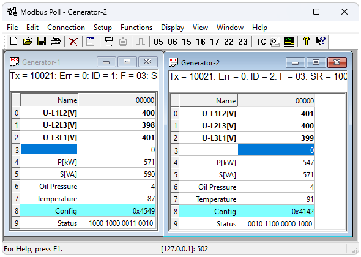
This picture shows two open windows. One reading 10 Holding registers from slave ID 1; another reading 10 Holding registers from slave ID 2.
3.1. Help from Anywhere
Press F1 to get context-sensitive help on a topic associated with the current selected item.
SHIFT + F1 invokes a special "help mode" in which the cursor turns into a help cursor (arrow + question mark). The user can then select a visible object in the user interface, such as a menu item, toolbar button, or window. This opens help on a topic that describes the selected item.
3.2. Name Cells
You can type any text as labels of the value cells. You may also copy/paste text from Microsoft Excel.
3.3. Value Cells
Value cells show data from the Modbus registers. If you double‑click a value cell, a dialog opens, letting you write a new value to the slave device. Entering a number in a value cell also opens this dialog. You can choose which Modbus function is used for writing.
The checkbox "Close dialog on Response OK" automatically closes the dialog when the operation succeeds. This is useful when many values need changing, so you can quickly move from one to the next.
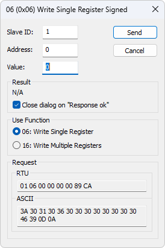
3.4. Change Font
To change the font you have three options:
-
Select the cells, then right-click Font.
-
Select the cells, then select Font from the Display menu.
-
Press Alt + Shift + F
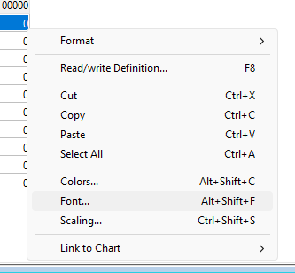
3.5. Open a new window
To open another window you have three options:
-
Press CTRL + N
-
Select New in the File menu
-
Press on the toolbar
4. Connection Setup
To open the Connection Setup dialog you have two options:
-
Press F3
-
Select Connect from the Connection menu
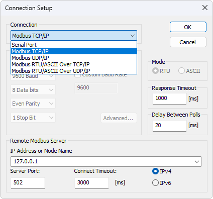
4.1. Connection Types
There are five connection types:
-
Serial:
Modbus Over Serial Line. RS232 or RS485. A USB serial converter can be used. -
Modbus TCP/IP:
Select TCP/IP if you want to communicate with a MODBUS TCP/IP network. The slave ID corresponds to the Unit ID used in MODBUS TCP/IP.
The port number is default 502.
If the connection fails, try to ping your device at the command prompt. If the ping command fails, the Modbus Poll also fails. -
* MODBUS/TCP Security:*
Select TCP/Security if you want to communicate with a MODBUS TCP/Security network. The port number is default 802. -
Modbus UDP/IP:
Same as TCP/IP but using UDP (connectionless). -
Modbus RTU/ASCII Over TCP/IP:
RTU or ASCII messages encapsulated in TCP/IP. -
Modbus RTU/ASCII Over UDP/IP:
RTU or ASCII messages encapsulated in UDP/IP.
|
Connection types 3-5 are not standard Modbus as specified by www.modbus.org, but they are included for convenience. |
Depending on your selection, some settings will be disabled (grayed out).
4.2. Serial Settings
These parameters are available only if Serial connection type is selected.
- Mode
-
Use this option to select RTU or ASCII mode. Default RTU.
- Response Timeout
-
Time to wait for a response from a slave before timeout. Default is 1000 ms.
- Delay Between Polls
-
Ensures a minimum delay before the next request, regardless of scan rate. The resolution of this setting is approximately 15 ms. On some computers, better resolution may be possible, but not on all.
|
- Custom Baud Rate
-
You can specify a custom baud rate if the defaults aren’t suitable.
4.3. Remote Server
Remote server settings are only available when using an Ethernet connection.
- IP Address
-
Server’s IP address. Default is localhost (127.0.0.1)
- Server Port
-
Server’s port number. Default is 502
- Connect Timeout
-
Maximum time allowed to establish a connection. The default is 1000 ms
4.4. Advanced Settings
- RTS Toggle
-
RTS Toggle specifies that the RTS line will be high if bytes are available for transmission. After all buffered bytes have been sent, the RTS line will be low.
You can use this to switch direction if you have a RS-232/RS-485 converter without an automatic direction switch.
| The use of RTS controlled RS-232/RS-485 converters should be avoided if possible. It is difficult to determine the exact time when to switch off the transmitter with non real-time operating systems like Windows and Linux. If it is switched off too early characters might still sit in the FIFO or the transmit register of the UART and these characters will be lost. Hence the slave will not recognize the message. On the other hand if it is switched off too late then the slave’s message is corrupted and the master will not recognize the message. |
- DSR
-
DSR specifies whether the DSR (data-set-ready) signal is monitored for output flow control. If this member is TRUE and DSR is turned off, output is suspended until DSR is sent again.
- CTS
-
CTS specifies whether the CTS (clear-to-send) signal is monitored for output flow control. If this checkbox is enabled and CTS is turned off, output is suspended until CTS is sent again.
- DTR
-
DTR specifies whether the DTR will be enabled or disabled whenever the port is opened.
- Remove Echo
-
Use this setting if your device or RS-232/RS-485 converter echoes characters that have been sent.
5. Read/Write Definition
Use this dialog to define what data will be monitored in the active Modbus window.
To open the Read/Write Definition dialog:
-
Press F8
-
Select Read/Write Definition from the Setup menu
-
Click the on the toolbar
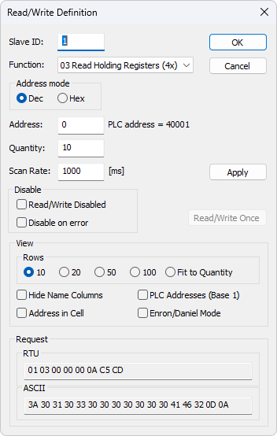
5.1. Slave ID
Range 1 to 255. (MODBUS protocol specifications say 247). The value 0 is accepted when communicating directly with a MODBUS/TCP or MODBUS/UDP device.
5.2. Function Code
You can select one of eight function codes.
5.2.1. Read Functions
The data returned by the read functions are displayed on the grid window.
-
01: Read Coils (0x)
-
02: Read Discrete Inputs (1x)
-
03: Read Holding Registers (4x)
-
04: Read Input Registers (3x)
5.2.2. Write Functions
The write functions write the data displayed on the grid window.
-
05: Write Single Coil (Writes to Coils (0x))
-
06: Write Single Register (Writes to Holding Registers (4x))
-
15: Write Multiple Coils (Writes to Coils (0x))
-
16: Write Multiple Registers (Writes to Holding Registers (4x))
5.3. Address
Modbus addressing can be confusing. Some specifications use protocol/message addresses (base 0), others use device addresses (base 1) or the traditional 4X/3X register notation.
5.3.1. Protocol/Message Address
Some protocol specifications use the protocol/message address counting from 0 to 65535 along with a function code. This is what newer Modbus specifications use. This is the address inside the message sent on the wire.
Modbus Poll uses protocol/message address counting from 0 to 65535.
5.3.2. Device Address
Some protocol specifications use device address/registers. Registers count from 1. The first digit describes the function to be used. That means the device address 40101 is identified by address 100. The "4" means Holding registers and 4x registers counts from 1. Therefore the ‘4XXXX’ reference is implicit. And even more confusing: 4x means function code 03 and 3x means function code 04!
5.3.3. 5 digits vs. 6 digits (Extended) Addressing
The address format 4x counts from 40001 to 49999. The next address is not 50000. In the old days 9999 addresses was enough. There are cases where 9999 is not enough. Then a zero is added. 40101 becomes 400101 and so on. This is called 6 digits addressing or extended addressing.
This is not a problem with Modbus Poll. 410001 become 10000. The "4" is thrown away and the rest 10001 is decremented by 1 as we count from 0 instead of 1.
5.3.4. Address Examples
These examples show how to set up Modbus Poll if a specification uses device addresses.
Read Holding Registers
You want to read 20 registers from device address 40011 (i.e. Holding Registers) from slave ID 2 every 1000 ms:
-
Slave ID = 2
-
Function = "03 Read Holding Registers (4x)"
-
Address = 10 (11 minus 1)
-
Quantity = 20
-
Scan Rate = 1000 ms
Read Discrete Inputs
You want to read 1000 discrete inputs starting at device address 110201 from slave ID 5 every 500 ms:
-
Slave ID = 5
-
Function = "02 Read Discrete Inputs (1x)"
-
Address = 10200 (10201 - 1)
-
Quantity = 1000
-
Scan Rate = 500 ms
- Scan Rate
-
The Scan Rate may be set between 0 and 3,600,000 ms. Setting the Scan Rate lower than the transaction time has no effect; the actual polling cannot be faster than it takes to complete a request and response.
| With a serial connection at 9600 baud requesting 125 registers, transaction time might be 8 + 2 + 250 + 2 = 262 ms plus the required gap (>3.5 char time) between the request and the response. Setting the Scan Rate at e.g. 100 ms is therefore nonsensical in that case. |
- Read/Write Disabled
-
The "Read/Write Disabled" checkbox lets you temporarily disable communication in the current window. When disabled, "Disabled" is shown along with the Tx and Error counters.
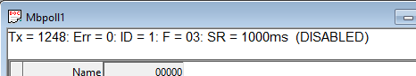
If disabled, you can still issue single requests using the "Read/Write once" button (or press F6).
"Read/Write once" button
- Disable on error
-
Disable Read/Write in case of error.
- Hide Name Columns
-
Hide all name columns to free up space in the display if you are not using them.
- Address in Cell
-
If enabled, the address is also shown inside the value cell, for example: '2000 = 00000'.
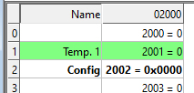
- PLC Addresses (Base 1)
-
This option shows addresses using device address notation (base 1) instead of protocol/message addressing (base 0).
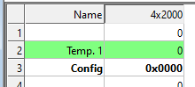
- Enron/Daniel Mode
-
Enron or Enron/Daniels Modbus is Standard Modbus with a few "Vendor Extensions". The exact impact of these extensions is context dependent, but most common Modbus commands work as expected. There are some custom vendor-defined functions available - but few users expect or use them. The largest impact has to do with how 32-bit data values are read/written.
Enron-Modbus defines two special 4x holding register ranges:
-
4x5001 to 4x5999 are assumed 32-bit long integers (4-bytes per register).
-
4x7001 to 4x7999 are assumed 32-bit floating points (4-bytes per register).
Dealing with 32-bit values in Modbus is NOT unique to Enron-MB. However, Enron-MB takes the debatable step of returning 4-bytes per register instead of the 2-bytes implied by the term "holding register" in the Modbus specification. This means a poll of registers 4x5001 and 4x5002 in Enron-Modbus returns 8-bytes or two 32-bit integers, whereas Standard Modbus would only return 4-bytes or one 32-bit integer treated as two 16-bit integers. In addition, polling register 4x5010 in Enron-MB returns the tenth 32-bit long integer, whereas Standard Modbus would consider this 1/2 of the fifth 32-bit long integer in this range.
- Rows
-
Specify how many rows of data display you prefer in the grid.
6. Real-Time Charting
Use this command to plot up to 12 data series in a chart in real time.
The real time chart is high speed and capable of drawing a new line as fast as new data is received.
| All chart settings are saved in the workspace file. Save/Open Workspace |
To open the Real Time Charting dialog you have 2 options:
-
Press Alt + R
-
Select Real Time Charting from the Display menu
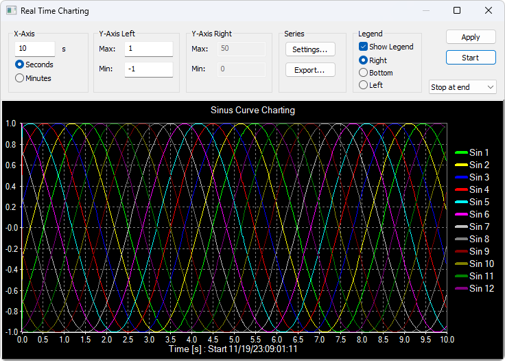
The X-Axis displays the number of seconds since the chart was started.
When the points reach the end of the chart there are 3 options:
-
Stop at end: The charting stops.
-
Restart at end: The charting starts all over again.
-
Continue: It continues until it reaches the max number of points or stop is pressed.
-
Auto Panning: As Continue but panning half a chart to the left.
6.1. Settings
By default all 12 series are linked to the left Y-Axis. Check the "Right Y-Axis" check box if you want to link a series to the right Y-Axis.
- Specify
-
-
Colors
-
Right Y-Axis
-
Title. If title is empty it is initialized with the name from the reading window
-
Offset
-
Visible
-
White Background
-
The offset is useful to align data points on the same Y-Axis. For example, data points that are either 0 or 1 can be offset so they are not drawn on top of each other.
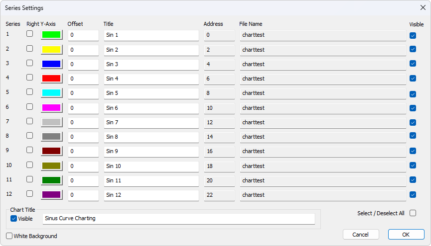
6.2. Zoom Function
Zooming in on the chart can be useful if you want to see more details. The zoom is controlled with the left mouse button. To zoom a specific part of the chart, simply left-click on the chart (this will be the upper-left corner of the zoomed rectangle) and drag to the bottom-right. A rectangle will appear. As soon as you release the mouse button, the axes will automatically adjust themselves to the region you have selected.
If you left-click on the chart (like for starting a zoom) but if you move to the top-left corner instead, all the modifications done with the zoom and pan features will be canceled (the chart will be in the state it was before the manipulations with the pan and zoom).
6.3. Pan Function
Right‑click on the chart and drag to pan. The point under the mouse follows the movement.
6.4. Link Data to Chart Series
To include data in a chart series:
-
Select a Value Cell
-
Choose Link to Chart from the Display menu.
-
Assign it to one of the available series.
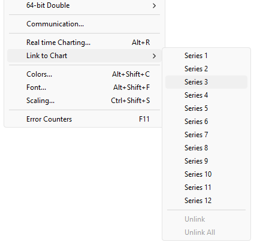
6.5. Export Series
Save series data to disk or copy to clipboard (for example, to paste into Microsoft Excel).
The exported file uses a .csv extension even if the field delimiter isn’t a comma.
- Delimiters
-
Select the character that separates values in your text file. Use tab delimiter when copy/paste to Microsoft Excel.
- Save to PNG file
-
Save the Chart to a PNG file.
- Furthermore some additional information is given.
-
-
Number of points
-
Max point value
-
Min point value
-
Average point value
-
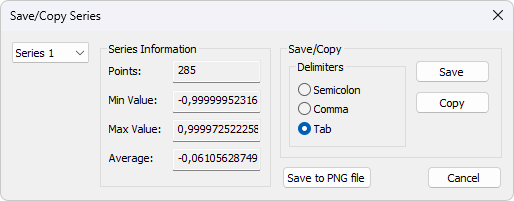
7. Address Scan
Scan a range of addresses to find valid addresses in a device. Addresses are read one by one; results are shown in a list.
To open the Address Scan dialog you have two options:
-
Press Alt + A
-
Select Address Scan from the Function menu
| Scanning all 65535 addresses may take considerable time depending on connection type (e.g., Serial or TCP/IP). |
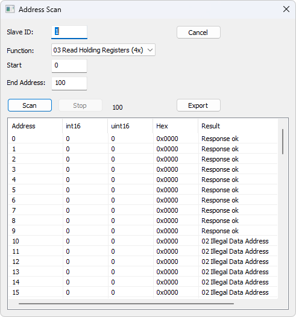
7.1. Export Address Scan
Save the scan results to a file or copy to the clipboard (for example, to paste into Microsoft Excel).
The exported file uses a .csv extension even if the field delimiter isn’t a comma.
- Delimiters
-
Select the character that separates values in your text file. Use tab delimiter when copy/paste to Microsoft Excel.
8. Slave Scan
Scan a slave ID range for a list of all slave IDs in a network. Slaves are read one by one and the read result is shown in a list.
To open the Slave Scan dialog:
-
Select Slave Scan from the Function menu
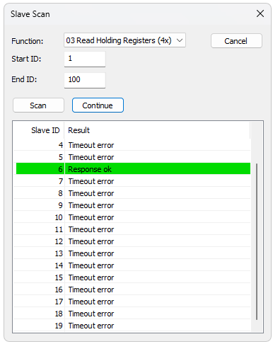
9. Display Formats
Mark the cells you want formatted, then choose one of the 28 display formats under the Display menu.
9.1. Native Modbus Registers
16-bit registers, displayable as:
-
Signed
-
Unsigned
-
Hex
-
ASCII - Hex
-
Binary
9.2. 32-bit Signed Integer
Combines two 16-bit registers. Four possible word/byte orders:
-
Big-endian
-
Little-endian
-
Big-endian byte swap
-
Little-endian byte swap
- Example
-
Byte Order: AB CD (Big-endian)
The decimal number 123,456,789 or in hexadecimal 07 5B CD 15
Order as they come over the wire in a Modbus message: 07 5B CD 15
9.3. 32-bit Unsigned Integer
Same as above but interpreted as unsigned.
9.4. 64-bit Signed Integer
Combines four 16-bit registers. Four possible word/byte orders:
-
Big-endian
-
Little-endian
-
Big-endian byte swap
-
Little-endian byte swap
- Example
-
Byte Order: AB CD EF GH (Big-endian)
The decimal number -1,234,567,890,123,456,789 or in hexadecimal EE DD EF 0B 82 16 7E EB
Order as they come over the wire in a Modbus message: EE DD EF 0B 82 16 7E EB
9.5. 64-bit Unsigned Integer
Same as above but interpreted as unsigned.
- Example
-
Byte Order: AB CD EF GH (Big-endian)
The decimal number 1,234,567,890,123,456,789 or in hexadecimal 11 22 10 F4 7D E9 81 15
Order as they come over the wire in a Modbus message: 11 22 10 F4 7D E9 81 15
9.6. 32-bit Floating
Combines two 16-bit registers. Four possible word/byte orders:
-
Big-endian
-
Little-endian
-
Big-endian byte swap
-
Little-endian byte swap
- Example
-
Byte Order: AB CD (Big-endian)
The floating point number 123456.00 or in hexadecimal 47 F1 20 00
Order as they come over the wire in a Modbus message: 47 F1 20 00
9.7. 64-bit Double
Combines Four 16-bit registers. Four possible word/byte orders:
-
Big-endian
-
Little-endian
-
Big-endian byte swap
-
Little-endian byte swap
- Example
-
Byte Order: AB CD EF GH (Big-endian)
The floating point number 123456789.00 or in hexadecimal 41 9D 6F 34 54 00 00 00
Order as they come over the wire in a Modbus message: 41 9D 6F 34 54 00 00 00
10. Conditional Colors
Conditional Colors let you visually display values when they fall within specified ranges.
To open the Conditional Colors dialog you have two options:
-
Press Alt + Shift + C
-
Select Colors from the Display menu
- There are three color rules
-
-
Normal Color: used if none of the conditional rules apply.
-
Rule 1: applies if its expression evaluates to true. It takes precedence over Rule 2.
-
Rule 2: applies if its expression evaluates to true.
-
- Seven comparison operators are supported
-
-
not used
-
equal to
-
greater than
-
less than
-
greater than or equal to
-
less than or equal to
-
and
-
| The "and" operator can only be used if the data type is a 16-bit integer. If "and" is used, the condition value must be entered in hexadecimal. The expression evaluates true if any bit is 1 in both the cell value and the condition value. |
10.1. Color example
Green color if the cell value is greater than 0 and red if less than 0.
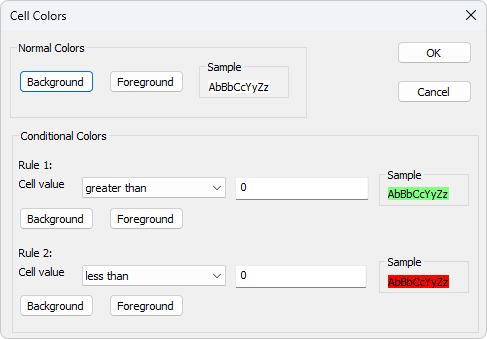
11. Scaling
Scaling allows you to map raw values to more human readable ones. Works only for signed or unsigned 16- or 32-bit integers.
To open the Scaling dialog you have two options:
-
Press Ctrl + Shift + S
-
Select Scaling from the Display menu
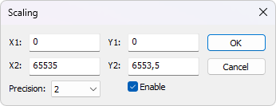
- (X1,Y1) and (X2,Y2)
-
A line passing through the two points (X1,Y1) and (X2,Y2)
\$Slope = m = (Y2 - Y1) / (X2 - X1)\$
- Line equation
-
\$Y = m * (X - X1) + Y1\$
- Precision
-
Number of digits after the decimal point.
- Enable
-
Must be enabled to scale the value from the Modbus server/slave. Scaling is automatically disabled if a non-16/32-bit integer format is selected.
12. Value Names
To open the Value Names dialog you have two options:
-
Press Ctrl + Shift + V
-
Select Value Names from the Display menu
Create a text file (*.txt) mapping register values to descriptive text. The value of the 16-bit modbus registers will be replaced by the text.
- Text file example for inverters from Schneider Electric like Ativar
0=Autotuning
1=DC injection
2=Ready
3=Freewheel
4=Running
5=Accelerating
6=Decelerating
7=In current limitation
8=Fast stop
11=No mains voltage
13=Control stoppingIf no text is assigned, the numeric value is shown.
All texts are stored with the *.mbp files.
- Import
-
Press the Import button to import the texts from the file.
- Export
-
Press the Export button to export the texts to a *.txt file to be edited or used by another setup.
- Enable
-
Must be enabled to display names. If disabled, it displays the current value.
13. Save/Open Workspace
If you open many related Modbus windows it is convenient to save a snapshot of the current layout of all open and arranged Modbus Windows in one workspace.
A workspace (*mbw) is a file that contains display information and file names of all open windows. Not the actual contents. To do this, go to File→Save Workspace.
The Connection and Chart settings are stored in the Workspace file.
When you open a workspace file, Modbus Poll opens all Modbus Windows and displays them in the layout that you saved.
14. Export to CSV
Export names and values to a comma, semicolon or tab-separated files.
- Select from the file dialog
-
-
Comma Separated Values file (*.csv)
"Temperature","19.7" -
Semicolon Separated Values file (*.csv)
"Temperature";"19.7" -
Tab Separated Values file (*.txt)
Temperature 19.7
-
Decimal separator (comma or period) depends on system locale.
15. Export to Modbus Slave
Export names, values and formatting to a Modbus Slave file. *.mbs
Requires Modbus Slave version 7.4.0 or newer to open the file.
16. Test Center
The purpose of this test dialog is to help developers of MODBUS slave devices test the device with any string of their own composition.
The list box shows the transmitted data as well as the received data.
You can have multiple test strings in the drop-down menu.
After entering a string, press the "Add to List" button, and the string will be added to the list.
The selected string will be sent when you press the "Send" button.
To open the Test Center dialog you have two options:
-
Press Alt + T
-
Select Test Center from the Function menu
- Open list
-
Read test strings from a file.
- Save list
-
Store the test strings to a file.
- Clear
-
Clear the test list.
- Add to list
-
Add the current test string to the list.
- Add Check
-
Add a CRC or LRC to the end of the input string.
Optionally disable communication from other windows when using Test Center Check the "Read/Write disable" check box in "Read/Write Definition" dialog. Setup→Read/Write Definition.
16.1. Comments
Comments start with two forward slashes (//).
Any text between // and the end of the line is ignored.
16.2. ASCII Example
Combo‑box entry example string:
3A 30 31 30 33 30 30 30 30 30 30 30 41
If an LRC is added:
3A 30 31 30 33 30 30 30 30 30 30 30 41 46 32 0D 0A
Also a CR LF pair is appended.
16.3. TCP/IP Example
Reading 10 holding registers example string:
00 00 00 00 00 06 01 03 00 00 00 0A
The first six bytes are the TCP/IP header.
16.4. Test Center String File
Strings can be prepared in a text file:
-
The first line must be "TestCenter" so Modbus Poll recognizes the format.
-
Subsequent lines are the test strings.
16.4.1. Content of a string list
TestCenter 3A 30 31 30 33 30 30 30 30 30 30 30 41 3A 30 32 30 33 30 30 30 30 30 30 30 41 3A 30 33 30 33 30 30 30 30 30 30 30 41
16.5. Copy
Use the Copy button to copy selected Tx/Rx strings to the clipboard.
You can use SHIFT and CTRL keys with the mouse to select/deselect, group, and pick nonadjacent items.
| Leave the window open while performing other tasks. |
17. Modbus Data Logging
You can log data either to a text file or directly into Microsoft Excel.
17.1. Text File
To open the Log Setup dialog you have two options:
-
Press Alt + L
-
Select Log from the Setup menu
Each Modbus window logs to its own text file.
To stop logging, select the Logging Off command in the Setup menu (or use Alt + O).
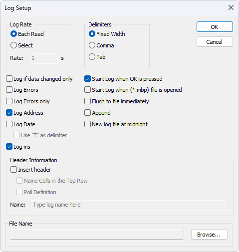
17.1.1. Log Rate
- Each read
-
Write a logline for each Modbus request. Log frequency follows scan rate.
- Select
-
Specify log rate in seconds (independent of scan rate).
| If the scan rate is long (e.g. 10000 ms), setting a much shorter log rate doesn’t make sense because data only arrives when new data is available |
17.1.2. Delimiters
Available options:
- Fixed width
-
Values aligned in columns.
- Comma
-
Values separated by commas.
- Tab
-
Values separated by tabs.
17.1.3. Log Settings
- Log if data changed only
-
New log lines are written only if data has changed since the previous line.
- Log Errors
-
Errors (such as timeouts, etc.) are logged if this option is enabled.
- Log Address
-
Include the Modbus address in the log line.
- Log Date
-
Include current date in the log timestamp.
- Use "T" as delimiter
-
Use "T" between date and time per ISO‑8601 format.
- Log ms
-
Include milliseconds in the timestamp.
- Start Log When OK is pressed
-
Logging begins when OK is pressed in the log dialog. Otherwise the log setup is just stored when *mbp file is saved.
- Start Log when (*mbp) file is opened
-
Logging begins automatically when the file (*.mbp) is opened.
- Flush to file immediately
-
Ensures log lines are immediately written, rather than being cached in the file system.
- Append
-
If enabled, logs are appended to an existing file; otherwise a new file is created.
New Log File at midnight Automatically close the current log file at midnight, start a new one, and add a timestamp to the filename.
17.1.4. Header Information
- Insert header
-
Information is inserted in the top of the log file.
- Name Cells in the Top Row
-
Insert names.
- Poll Definition
-
Insert ID, Function etc.
- Name
-
Insert the name of your log.
Example of a text file with fixed width:
22:28:13 <40001> 17395 0 0 0 0 0 0 0 0 22:28:14 <40001> 17396 1 0 0 0 0 0 0 0 22:28:15 <40001> 17394 1 0 0 2 55 0 0 0 22:28:16 <40001> 13350 1 0 0 4 0 0 0 0
You can import the data in an Microsoft Excel spreadsheet.
17.2. Microsoft Excel
To open the Excel Log Setup dialog you have two options:
-
Press Alt + X
-
Select Excel Log from the Setup menu
This feature requires that Microsoft Excel is installed. Excel 2003 log is limited to 65,535 logs as this is the max number of rows in an Excel sheet. Excel 2007 or newer is limited to 1,048,576 rows. Each Modbus window logs to its individual Excel sheet.
| When logging, do not modify the Excel sheet manually, as this may interrupt logging. |
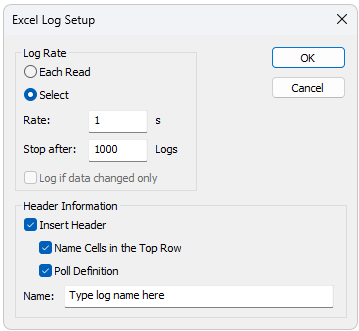
17.2.1. Log Rate
- Each read
-
Write a logline for each Modbus request. Log frequency follows scan rate.
- Select
-
Specify log rate in seconds (independent of scan rate).
| If the scan rate is long (e.g. 10000 ms), setting a much shorter log rate doesn’t make sense because data only arrives when new data is available |
- Stop after
-
Specify the number of log lines. Note that Excel 2003 is limited to 65,536 rows and Excel 2007 1,048,576 rows.
- Log if data changed only
-
New log lines are written only if data has changed since the previous line.
17.2.2. Header Information
-
Insert Header: Information is inserted in the top most 3 rows in the Excel sheet.
-
Name Cells in the Top Row: Insert names in row 3.
-
Poll Definition: Insert ID, Function etc. in row 2.
-
Name: Insert a log name in row 1.
-
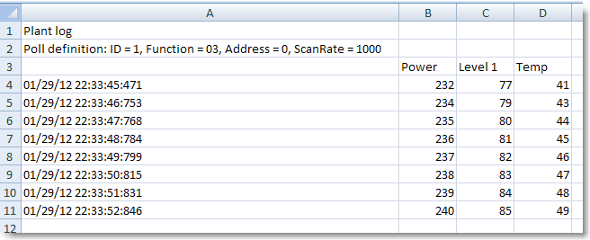
Microsoft Excel Log with header information.
18. Communication Traffic
Select Communication from the Display menu to show the traffic on the Serial Line or Ethernet cable.
- Stop
-
Use the stop button to temporarily stop the update for inspection.
- Clear
-
Clear the content of the window.
- Save
-
Save the communication traffic content to a file.
- Copy
-
Use the copy button to copy selected lines to the clipboard.
- Log
-
Log the communication traffic to a file.
- Stop on Error
-
Stop the update of the window in case an error is detected.
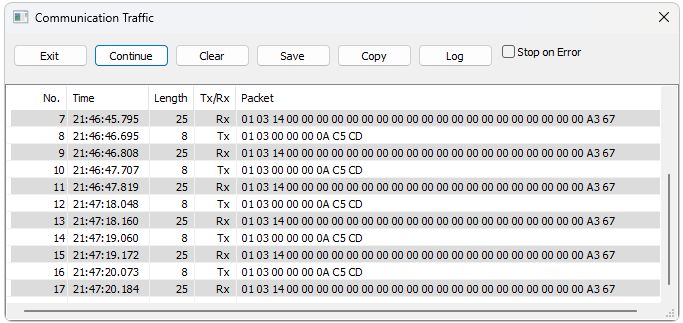
| This window displays only traffic from Modbus Poll; it is not a general data sniffer. |
| Leave the window open while performing other tasks. |
19. OLE/Automation
Automation (formerly known as OLE Automation) makes it possible for one application to manipulate objects implemented in another application.
An Automation client is an application that can manipulate exposed objects belonging to another application. This is also called an Automation controller.
An Automation server is an application that exposes programmable objects to other applications. Modbus Poll is an automation server.
That means you can use any program that supports VBA (Visual Basic for Applications) such as Visual Basic, Excel etc. to interpret and show the modbus data according to your specific requirements.
19.1. Excel Example
You should display the Developer tab or run in developer mode when you want to write macros.
19.1.1. Excel 2007
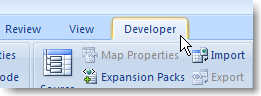
-
Click the Microsoft office button and then click Excel options.
-
Click popular and then select the show Developers tab in the ribbon check box.
Note the ribbon is part of the Microsoft fluent user interface.
19.1.2. Excel 2010, 2016
-
Click on the file tab.
-
Click options. Excel Options window will open.
-
On the left pane click Customize Ribbon.
-
On the right pane, under Main Tabs, check the Developer check box.
-
Click OK. The Developer tab should now show in the ribbon (right most tab).
19.1.3. Excel sample code
This example opens two windows. One reading registers and another reading Coils.
Modbus Poll is hidden but you can show it by uncommenting the "ShowWindow" line. This will show one of the windows.
An example is also included with the Modbus Poll installation.
Start → All Programs → Modbus Poll → Excel Example
Public doc1 As Object
Public doc2 As Object
Public app As Object
Dim res As Integer
Dim n As Integer
Private Sub StartModbusPoll_Click()
Set app = CreateObject("Mbpoll.Application")
Set doc1 = CreateObject("Mbpoll.Document")
Set doc2 = CreateObject("Mbpoll.Document")
' Read 10 Holding Registers every 1000ms
res = doc1.ReadHoldingRegisters(1, 0, 10, 1000)
' Read 10 Coil Status every 1000ms
res = doc2.ReadCoils(1, 0, 10, 1000)
' doc1.ShowWindow()
app.Connection = 1 ' Modbus TCP/IP
app.IPAddress = "127.0.0.1" ' local host
app.ServerPort = 502
app.ConnectTimeout = 1000
res = app.OpenConnection()
End Sub
Private Sub Read_Click()
Cells(5, 7) = doc1.ReadResult() 'Show results for the requests
Cells(6, 7) = doc2.ReadResult()
For n = 0 To 9
Cells(5 + n, 2) = doc1.SRegisters(n)
Next n
For n = 0 To 9
Cells(18 + n, 2) = doc2.Coils(n)
Next n
End Sub19.2. Python example
This Python example opens a window and sets all possible data formats.
import win32com.client as win32
SIGNED = 0
UNSIGNED = 1
HEX = 2
BINARY = 3
FLOAT_LE_BS = 4
FLOAT_BE = 5
DOUBLE_LE_BS = 6
DOUBLE_BE = 7
S32_LE_BS = 8
S32_BE = 9
FLOAT_LE = 10
FLOAT_BE_BS = 11
DOUBLE_LE = 12
DOUBLE_BE_BS = 13
S32_LE = 14
S32_BE_BS = 15
U32_BE = 17
U32_LE_BS = 18
U32_BE_BS = 19
U32_LE = 20
S64_BE = 21
S64_LE_BS = 22
S64_BE_BS = 23
S64_LE = 24
U64_BE = 25
U64_LE_BS = 26
U64_BE_BS = 27
U64_LE = 28
#Endianness
BE = 0
LE = 3
BE_BS = 2
LE_BS = 1
App = win32.Dispatch('Mbpoll.Application')
App.Connection = 1
App.IPAddress = "127.0.0.1"
App.ServerPort = 502
App.OpenConnection
#Create a Modbus display window called Win1
Win1 = win32.Dispatch("Mbpoll.Document")
# Read 100 holding registers from slave ID 1, address 0 (40001) every 1000ms
Win1.ReadHoldingRegisters(1, 0, 100, 1000)
# Show the Modbus window
Win1.ShowWindow()
# Show 20 rows
Win1.Rows(1)
# Disable refresh for speed
Win1.EnableRefresh = False
# Set all different formats
# This sets how the value is displayed
Win1.SetFormat(0, SIGNED)
Win1.SetFormat(1, UNSIGNED)
Win1.SetFormat(2, HEX)
Win1.SetFormat(3, BINARY)
Win1.SetFormat(4, S32_BE)
Win1.SetFormat(6, S32_LE)
Win1.SetFormat(8, S32_BE_BS)
Win1.SetFormat(10, S32_LE_BS)
Win1.SetFormat(12, U32_BE)
Win1.SetFormat(14, U32_LE)
Win1.SetFormat(16, U32_BE_BS)
Win1.SetFormat(18, U32_LE_BS)
Win1.SetFormat(20, S64_BE)
Win1.SetFormat(24, S64_LE)
Win1.SetFormat(28, S64_BE_BS)
Win1.SetFormat(32, S64_LE_BS)
Win1.SetFormat(40, U64_BE)
Win1.SetFormat(44, U64_LE)
Win1.SetFormat(48, U64_BE_BS)
Win1.SetFormat(52, U64_LE_BS)
Win1.SetFormat(60, FLOAT_BE)
Win1.SetFormat(62, FLOAT_LE)
Win1.SetFormat(64, FLOAT_BE_BS)
Win1.SetFormat(66, FLOAT_LE_BS)
Win1.SetFormat(80, DOUBLE_BE)
Win1.SetFormat(84, DOUBLE_LE)
Win1.SetFormat(88, DOUBLE_BE_BS)
Win1.SetFormat(92, DOUBLE_LE_BS)
# Set all Names to used format
Win1.SetName(0, "SIGNED")
Win1.SetName(1, "UNSIGNED")
Win1.SetName(2, "HEX")
Win1.SetName(3, "BINARY")
Win1.SetName(4, "S32_BE")
Win1.SetName(6, "S32_LE")
Win1.SetName(8, "S32_BE_BS")
Win1.SetName(10, "S32_LE_BS")
Win1.SetName(12, "U32_BE")
Win1.SetName(14, "U32_LE")
Win1.SetName(16, "U32_BE_BS")
Win1.SetName(18, "U32_LE_BS")
Win1.SetName(20, "S64_BE")
Win1.SetName(24, "S64_LE")
Win1.SetName(28, "S64_BE_BS")
Win1.SetName(32, "S64_LE_BS")
Win1.SetName(40, "U64_BE")
Win1.SetName(44, "U64_LE")
Win1.SetName(48, "U64_BE_BS")
Win1.SetName(52, "U64_LE_BS")
Win1.SetName(60, "FLOAT_BE")
Win1.SetName(62, "FLOAT_LE")
Win1.SetName(64, "FLOAT_BE_BS")
Win1.SetName(66, "FLOAT_LE_BS")
Win1.SetName(80, "DOUBLE_BE")
Win1.SetName(84, "DOUBLE_LE")
Win1.SetName(88, "DOUBLE_BE_BS")
Win1.SetName(92, "DOUBLE_LE_BS")
# Refresh
Win1.EnableRefresh = True
Win1.ResizeAllColumns ()
Win1.ResizeWindow()
result = Win1.Save("C:\\Users\\UserName\\Desktop\\testfile.mbp")
print (result)
print (Win1.GetName(1))
_ = input("Press ENTER to quit:")19.3. Connection Functions/Properties
The following properties and functions do the same as you set up in the connection dialog (F3).
19.3.1. Connection
Connection selects the desired connection. A serial port or one of the Ethernet connections can be selected.
Property Connection as Integer
- Valid values
-
0 = Serial port
1 = Modbus TCP/IP
2 = Modbus UDP/IP
3 = Modbus ASCII/RTU over TCP/IP
4 = Modbus ASCII/RTU over UDP/IP
5 = Modbus TCP/Security
Connection = 019.3.2. BaudRate
Applicable only for Connection = 0
Property BaudRate as Long
- Valid values
-
300
600
1200
2400
4800
9600 (Default)
14400
19200
38400
56000
57600
115200
128000
153600
230400
256000
460800
921600
BaudRate = 960019.3.3. DataBits
Applicable only for Connection = 0
Property DataBits as Integer
- Valid values
-
7
8 (Default)
DataBits = 819.3.4. Parity
Applicable only for Connection = 0
Property Parity as Integer
- Valid values
-
0 = None
1 = Odd
2 = Even (Default)
Parity = 219.3.5. StopBits
Applicable only for Connection = 0
Property StopBits as Integer
- Valid values
-
1 (Default)
2
StopBits = 119.3.6. SerialPort
Applicable only for Connection = 0
Property SerialPort as Integer
- Valid values
-
1…255
Default value = 1
SerialPort = 119.3.7. Mode
Applicable only for Connection = 0
Property Mode as Integer
- Valid values
-
0 = RTU Mode
1 = ASCII Mode
Mode = 119.3.8. RemoveEcho
Applicable only for Connection = 0
If your device or RS232/RS485 converter echoes the chars just sent.
Property RemoveEcho as Integer
- Valid values
-
0 (Default)
1 (Remove echoes)
RemoveEcho = 119.3.9. ResponseTimeout
The ResponseTimeout specifies the length of time in ms that Modbus Poll should wait for a response from a slave device before giving up.
Property ResponseTimeout as Integer
- Valid values
-
50…100000
Default value = 1000
ResponseTimeout = 100019.3.10. DelayBetweenPolls
Property DelayBetweenPolls as Integer
- Valid values
-
0…1000
Default value = 20
DelayBetweenPolls = 2019.3.11. ServerPort
Applicable only for Connection = 1…4
Property ServerPort as Long
- Valid values
-
0…65535
Default value = 502
ServerPort = 50219.3.12. ConnectTimeout
The ConnectTimeout specifies the length of time that Modbus Poll should wait for a TCP/IP connection to succeed.
Applicable only for Connection = 1…4
Property ConnectTimeout as Integer
- Valid values
-
100…30000ms
Default value = 1000ms
ConnectTimeout = 100019.3.13. IPVersion
Applicable only for Connection = 1…4
Property IPVersion as Integer
- Valid values
-
4 = IP Version 4 (Default)
6 = IP Version 6
IPVersion = 419.3.14. OpenConnection
Opens the connection selected with the Connection property.
Function OpenConnection() As Integer
- Parameters
-
This function has no parameters.
- Return value
-
For error 3-5: Please check if you have the latest serial port driver.
| Error | Description |
|---|---|
0 |
SUCCESS |
1 |
Serial Port not available |
3 |
Serial port. Not possible to get current settings from the port driver. |
4 |
Serial port. The serial port driver did not accept port settings. |
5 |
Serial port. The serial port driver did not accept timeout settings. |
12 |
TCP/UDP Connection failed. WSA start up |
13 |
TCP/UDP Connection failed. Connect error |
14 |
TCP/UDP Connection failed. Timeout |
15 |
TCP/UDP Connection failed. IOCTL |
17 |
TCP/UDP Connection failed. Socket error |
21 |
TCP/UDP Connection failed. Address information |
255 |
Connection already open |
Public app As Object
Dim res As Integer
' Create an object to Modbus Poll
Set app = CreateObject("Mbpoll.Application")
app.Connection = 1 ' Select Modbus TCP/IP
app.IPVersion = 4
app.IPAddress = "192.168.1.27"
app.ServerPort = 502
app.ConnectTimeout = 1000
app.ResponseTimeout = 1000
res = app.OpenConnection()import win32com.client as win32
App = win32.Dispatch('Mbpoll.Application')
App.Connection = 0 # Serial connection
App.SerialPort = 3 # Com port 3
App.BaudRate = 9600 # 9600 baud
App.Parity = 0 # None parity
App.Mode = 0 # RTU mode
App.ResponseTimeout = 1000 # Wait 1000ms until give up
App.DelayBetweenPolls = 20 # Ensure minimum 20 ms gap until next request
App.OpenConnection
#Create a Modbus display window called Win1
Win1 = win32.Dispatch("Mbpoll.Document")
# Read 10 holding registers from slave ID 1, address 0 (40001) every 1000ms
Win1.ReadHoldingRegisters(1, 0, 10, 1000)
# Show the Modbus window
Win1.ShowWindow()
# Show 10 rows
Win1.Rows(0)
# Disable refresh for speed
Win1.EnableRefresh = False
# Set the name of the registers
Win1.SetName(0, "Register 0")
# Set the value to write
Win1.EnableRefresh = True
Win1.ResizeAllColumns ()
Win1.ResizeWindow()
_ = input("Press ENTER to quit:")19.3.15. CloseConnection
Function CloseConnection() As Integer
- Parameters
-
This function has no parameters.
- Return value
-
Zero if success. Nonzero value if failed.
19.3.16. ShowCommunicationTraffic
Shows the communication traffic window.
Function ShowCommunicationTraffic()
- Parameters
-
This function has no parameters.
- Return value
-
None
19.3.17. CloseCommunicationTraffic
Closes the communication traffic window if shown.
Function CloseCommunicationTraffic()
- Parameters
-
This function has no parameters.
- Return value
-
None
19.4. Read Functions
The following functions do the same as you set up in the read/write definition dialog (F8). Read functions are associated with a Modbus Poll document. (The window with data)
' First a Modbus Poll document is needed.
Public doc As Object
Set doc = CreateObject("Mbpoll.Document")
res = doc.ReadCoils(1, 0, 100, 1000) ' Read 100 coils every 1000 ms| You must create a Read before you can use properties to get data. |
19.4.1. ReadCoils
Modbus function code 01
Function ReadCoils(SlaveID As Integer, Address As Long, Quantity As Integer, ScanRate As Long) As Integer
- Parameters
-
SlaveID: The slave address 1 to 255
Address: The data address (Base 0)
Quantity: The number of data. 1 to 2000
ScanRate: 0 to 3600000 ms - Return value
-
True if success. False if not success
19.4.2. ReadDiscreteInputs
Modbus function code 02
Function ReadDiscreteInputs(SlaveID As Integer, Address As Long, Quantity As Integer, ScanRate As Long) As Integer
- Parameters
-
SlaveID: The slave address 1 to 255
Address: The data address (Base 0)
Quantity: The number of data. 1 to 2000
ScanRate: 0 to 3600000 ms - Return value
-
True if success. False if not success
19.4.3. ReadHoldingRegisters
Modbus function code 03
Function ReadHoldingRegisters(SlaveID As Integer, Address As Long, Quantity As Integer, ScanRate As Long) As Integer
- Parameters
-
SlaveID: The slave address 1 to 255
Address: The data address (Base 0)
Quantity: The number of data. 1 to 125
ScanRate: 0 to 3600000ms - Return value
-
True if success. False if not success
19.4.4. ReadInputRegisters
Modbus function code 04
Function ReadInputRegisters(SlaveID As Integer, Address As Long, Quantity As Integer, ScanRate As Long) As Integer
- Parameters
-
SlaveID: The slave address 1 to 255
Address: The data address (Base 0)
Quantity: The number of data. 1 to 125
ScanRate: 0 to 3600000 ms - Return value
-
True if success. False if not success
19.5. Automation Write Functions
The write functions write the values stored in the array filled by the properties. The below Write function does not create a data window. To create a data window use the Win functions e.g. WriteMultipleRegistersWin.
19.5.1. WriteSingleCoil
Modbus function code 05.
Writes the first coil stored in the write array.
Function WriteSingleCoil(SlaveID As Integer, Address As Long) As Integer
- Parameters
-
SlaveID: The slave address 0 to 255
Address: The data address (Base 0) - Return value
-
True if the write array is ready and the data is sent. False if the array is empty or error in the parameters.
The controlling application is responsible for verifying the write operation by reading back the value written.
19.5.2. WriteSingleRegister
Modbus function code 06.
Writes the first register stored in the write array.
Function WriteSingleRegister (SlaveID As Integer, Address As Long) As Integer
- Parameters
-
SlaveID: The slave address 0 to 255
Address: The data address (Base 0) - Return value
-
True if the write array is ready and the data is sent. False if the array is empty or error in the parameters.
The controlling application is responsible for verifying the write operation by reading back the value written.
19.5.3. WriteMultipleCoils
Modbus function code 15.
Write the coils stored in the write array.
Function WriteMultipleCoils(SlaveID As Integer, Address As Long, Quantity As Integer) As Integer
- Return value
-
True if the write array is ready and the data is sent. False if the array is empty or error in the parameters.
The controlling application is responsible for verifying the write operation by reading back the values written. - Parameters
-
SlaveID: The slave address 0 to 255
Address: The data address (Base 0)
Quantity The number of data. 1 to 1968
19.5.4. WriteMultipleRegisters
Modbus function code 16.
Write the registers stored in the write array.
Function WriteMultipleRegisters(SlaveID As Integer, Address As Long, Quantity As Integer) As Integer
- Parameters
-
SlaveID: The slave address 0 to 255
Address: The data address (Base 0)
Quantity: The number of data. 1 to 123 - Return value
-
True if the write array is ready and the data is sent. False if the array is empty or error in the parameters.
The controlling application is responsible for verifying the write operation by reading back the value written.
19.5.5. Python example
Python example: how to create a window that reads 10 registers from address 0 (40001) and then writes 5 registers.
import sys
import time
import win32com.client as win32
App = win32.Dispatch('Mbpoll.Application')
App.Connection = 1 # TCP/IP connection
App.IPAddress = "127.0.0.1"
App.ResponseTimeout = 1000 # Wait 1000ms until give up
App.DelayBetweenPolls = 20 # Ensure minimum 20 ms gap until next request
App.ConnectTimeout = 500 # Wait 500ms until give up
App.ServerPort = 502
result = App.OpenConnection
if result != 0:
print("Connection failed. Error: ", result)
sys.exit()
#Create a Modbus display window called Win1
Win1 = win32.Dispatch("Mbpoll.Document")
# Read 10 holding registers from slave ID 1, address 0 (40001) every 1000ms
Win1.ReadHoldingRegisters(1, 0, 10, 1000)
# Show the Modbus window
Win1.ShowWindow()
# Show 10 rows
Win1.Rows(0)
# Resize the window to fit to the grid
Win1.ResizeWindow()
time.sleep(1.0) # Wait until read is done
if Win1.ReadResult == 0: # Check read result
print("Modbus register 0 (40001) = ", Win1.SRegisters(0))
else:
print("Read failed error: = ", Win1.ReadResult)
print ("Tx count = %d, Rx count = %d" % (Win1.GetTxCount, Win1.GetRxCount))
# Prepare the internal array in Modbus Poll with data to write
Win1.SRegisters(0, 1) # Note that parameter 1 is not a
Win1.SRegisters(1, 10) # Modbus address but an index to the array
Win1.SRegisters(2, 100)
Win1.SRegisters(3, 1000)
Win1.SRegisters(4, 10000)
# Write the registers. This function do not create a window in Modbus Poll
# Use the function <<WriteMultipleRegistersWin>> to create a data window
Win1.WriteMultipleRegisters (1, 0, 5)
_ = input("Wait for write Press ENTER:")
if Win1.WriteResult == 0: # Check write result
print("Modbus write success")
else:
print("Write failed error: = ", WriteResult)
_ = input("Press ENTER to quit:")19.6. Various Functions
Various functions are associated with a Modbus Poll document. (The window with data)
19.6.1. ShowWindow
As default Modbus document windows are hidden. The ShowWindow function makes Modbus Poll visible and shows the document with data content.
Function ShowWindow()
- Parameters
-
This function has no parameters.
- Return value
-
None
19.6.2. GetTxCount
Get the number of requests.
Function GetTxCount() As Long
- Parameters
-
This function has no parameters.
- Return value
-
The number of requests.
19.6.3. GetRxCount
Getthe number of responses.
Function GetRxCount() As Long
- Parameters
-
This function has no parameters.
- Return value
-
The number of responses.
19.6.4. GetName
Gets the name of a value.
Function GetName(Index As Integer) As String
- Parameters
-
Index: Index 0 corresponds to the first Modbus address.
- Return value
-
The name.
19.6.5. SetName
Changes the name of a value. Function SetName(Index As Integer, Name As String)
- Parameters
-
Index: Index 0 corresponds to the first Modbus address.
Name: The name of the value cell. - Return value
-
None
19.6.6. FormatAll
Format all value cells with the selected format.
Function FormatAll(Format As Integer)
- Parameters
-
Format: The format of the value cell.
- Return value
-
None
19.6.7. GetFormat
Gets the display format of the Modbus value.
Function GetFormat(Index As Integer) As Integer
- Parameters
-
Index: Index 0 corresponds to the first Modbus address.
- Return value
| ID | Format |
|---|---|
0 |
Signed |
1 |
Unsigned |
2 |
Hex |
3 |
Binary |
4 |
Float little-endian byte swap |
5 |
Float big-endian |
6 |
Double little-endian byte swap |
7 |
Double big-endian |
8 |
32-bit Signed little-endian byte swap |
9 |
32-bit Signed big-endian |
10 |
Float little-endian |
11 |
Float big-endian byte swap |
12 |
Double little-endian |
13 |
Double big-endian byte swap |
14 |
32-bit Signed little-endian |
15 |
32-bit Signed big-endian byte swap |
17 |
32-bit Unsigned big-endian |
18 |
32-bit Unsigned little-endian byte swap |
19 |
32-bit Unsigned big-endian byte swap |
20 |
32-bit Unsigned little-endian |
21 |
64-bit Signed big-endian |
22 |
64-bit Signed little-endian byte swap |
23 |
64-bit Signed big-endian byte swap |
24 |
64-bit Signed little-endian |
25 |
64-bit Unsigned big-endian |
26 |
64-bit Unsigned little-endian byte swap |
27 |
64-bit Unsigned big-endian byte swap |
28 |
64-bit Unsigned little-endian |
| This setting is only for display. You still need to use byteOrder to get the correct endianness when using Get/Set value functions. |
19.6.8. SetFormat
Change the display format of the Modbus values. See Format values above.
Function SetFormat(Index As Integer, Format As Integer)
- Parameters
-
Index: Index 0 corresponds to the first Modbus address.
Format: The format of the value cell. - Return value
-
None
19.6.9. ResizeWindow
Resize an opened window to fit the grid.
Function ResizeWindow()
- Parameters
-
This function has no parameters.
- Return value
-
None
19.6.10. ResizeAllColumns
Resize all columns to fit the values inside the cells.
Function ResizeAllColumns()
- Parameters
-
This function has no parameters.
- Return value
-
None
19.6.11. Rows
Specify the number of rows in the grid.
Function Rows(NumberRows)
- Parameters
-
NumberRows: Number of rows in the grid.
| ID | Description |
|---|---|
0 |
10 Rows (Default) |
1 |
20 Rows |
2 |
50 Rows |
3 |
100 Rows |
4 |
Fit to quantity |
- Return value
-
None
19.6.12. EnableRefresh
Set to False while setting a lot of cell data such as names, values, and formatting. Set True when done.
Property EnableRefresh As Boolean
# Disable refresh for speed
Win1.EnableRefresh = False
#... Some cell data settings
# Refresh
Win1.EnableRefresh = True19.6.13. ReadWriteDisabled
Used to temporarily enable or disable the communication for this window.
Property ReadWriteDisabled As Boolean
19.6.14. ReadWriteOnce
Function ReadWriteOnce() Use this command to make one request. The property ReadWriteDisabled must be True in order to use this function.
- Parameters
-
This function has no parameters.
- Return value
-
None
19.6.15. ReadResult
Use this property to check if communication established with Read is running successfully.
Property ReadResult As Integer
- Parameters
-
This function has no parameters.
- Return value
| Error | Description |
|---|---|
0 |
SUCCESS |
1 |
TIMEOUT ERROR |
2 |
CRC ERROR |
3 |
RESPONSE ERROR (The response was not the expected slave id, function or address) |
4 |
WRITE ERROR |
5 |
READ ERROR |
6 |
PORT NOT OPEN ERROR |
10 |
DATA UNINITIALIZED |
11 |
INSUFFICIENT BYTES RECEIVED |
16 |
BYTE COUNT ERROR |
19 |
TRANSACTION ID ERROR |
81h |
ILLEGAL FUNCTION |
82h |
ILLEGAL DATA ADDRESS |
83h |
ILLEGAL DATA VALUE |
84h |
SERVER DEVICE FAILURE |
85h |
ACKNOWLEDGE |
86h |
SERVER DEVICE BUSY |
87h |
NAK-NEGATIVE ACKNOWLEDGMENT |
8Ah |
GATEWAY PATH UNAVAILABLE |
8Bh |
GATEWAY TARGET DEVICE FAILED TO RESPOND |
19.6.16. WriteResult
Use this function to check if a write was successful.
The value is DATA_UNINITIALIZED until the result from the slave is available. See ReadResult for a list of possible values.
Property WriteResult As Integer
- Return value
-
Return a write result as an integer.
19.6.17. Save
Save the current Window. Function Save(PathName As String) As Boolean
- Parameters
-
PathName: The fully qualified path to which the file should be saved.
- Return value
-
Boolean
' First a Modbus Poll document is needed.
Public doc As Object
Set doc = CreateObject("Mbpoll.Document")
res = doc.ReadCoils(1, 0, 100, 1000) ' Read 100 coils every 1000ms
res = doc.Save("C:\\Users\\UserName\\Desktop\\testfile.mbp")19.7. Automation data properties
The below properties are used to set or get values in the internal write/read arrays in Modbus Poll. The Index used is not a Modbus Address. The Index always counts from 0 no matter the address used. The data properties are associated with a Modbus Poll document. (The window with data)
There are 2 version of each data properties:
-
One with no postfix such as SRegisters which is used to set or get a value from the internal write/read array.
-
One with Win as a postfix such as SRegistersWin which is used to set or get a value directly from the data window. This is used when the data window is used for a Write function e.g. WriteMultipleRegistersWin.
Example 1:
' doc is assumed to be created first. See Excel example.
' Writes 1 to index 0 in the data array used for the Write function later
doc.SRegisters(0) = 1
doc.SRegisters(1) = 10
doc.SRegisters(2) = 1234
' Write 3 registers stored in Modbus Poll internal array
' to Modbus address 100 (40101)
' A window is not created
res = doc.WriteMultipleRegisters(1, 100, 3)
' The above example does not create a data window but just makes a single Modbus write.Example 2 with floating point values:
Write 3 floating point values.
' doc is assumed created first. See Excel example.
doc.Floats(0) = 1.3
doc.Floats(2) = 10.5
doc.Floats(4) = 1234.12
' Write the 6 register stored in Modbus Poll
res = doc. WriteMultipleRegisters(1, 0, 6)
' 6 Registers are written as a floating point value that is 32 bit wide.Example 3:
Create a window that writes 3 registers.
' doc is assumed to be created first. See Excel example.
' A window is created that writes the content every 1000ms
res = doc.WriteMultipleRegistersWin(1, 100, 3, 1000)
' Writes 1 to the first cell in the data window
doc.SRegistersWin(0) = 1
doc.SRegistersWin(1) = 10
doc.SRegistersWin(2) = 1234
' Now the 3 registers are written to slave id 1 address 100 every 1000ms19.7.1. Coils, CoilsWin
Property Coils(Index As Integer) As Integer
- Description
-
Sets a coil in the write array structure or returns a coil from the read array.
- Syntax
-
Coils(Index) [=newvalue]
19.7.2. SRegisters, SRegistersWin
Property SRegisters(Index As Integer) As Integer
- Description
-
Sets a register in the write array structure or returns a register from the read array.
- Syntax
-
SRegisters(Index) [=newvalue]
19.7.3. URegisters, URegistersWin
Property URegisters(Index As Integer) As Long
- Description
-
Sets a register in the write array structure or returns a register from the read array.
- Syntax
-
URegisters(Index) [=newvalue]
19.7.4. Ints_32, Ints_32Win
Property Ints_32(Index As Integer) As Double
- Description
-
Sets a 32-bit integer in the write array structure or returns an integer from the read array.
- Syntax
-
Ints_32(Index) [=newvalue]
19.7.5. UInts_32, UInts_32Win
Property UInts_32(Index As Integer) As Double
- Description
-
Sets a 32-bit unsigned integer in the write array structure or returns an unsigned integer from the read array.
- Syntax
-
UInts_32(Index) [=newvalue]
19.7.6. Ints_64, Ints_64Win
Property Ints_64(Index As Integer) As Double
- Description
-
Sets a 64-bit integer in the write array structure or returns an integer from the read array.
- Syntax
-
Ints_64(Index) [=newvalue]
19.7.7. UInts_64, UInts_64Win
Property UInts_64(Index As Integer) As Double
- Description
-
Sets a 64-bit unsigned integer in the write array structure or returns an unsigned integer from the read array.
- Syntax
-
UInts_64(Index) [=newvalue]
19.7.8. Floats, FloatsWin
Property Floats(Index As Integer) As Single
- Description
-
Sets a float in the write array structure or returns a float from the read array.
- Syntax
-
Floats(Index) [=newvalue]
19.7.9. Doubles, DoublesWin
Property Doubles(Index As Integer) As Double
- Description
-
Sets a double in the write array structure or returns a double from the read array.
- Syntax
-
Doubles(Index) [=newvalue]
19.7.10. ByteOrder
Property ByteOrder As Integer
- Description
-
Sets the byte order used by Ints_32, UInts_32, Ints_64, UInts_64, Floats and Doubles properties.
The Win versions do not use this Property ByteOrder.
| ID | Endianness |
|---|---|
0 |
Big-endian (Default) |
1 |
Little-endian byte swap |
2 |
Big-endian byte swap |
3 |
Little-endian |
Example for Ints_32:
Byte Order: Big-endian
The decimal number 123456789 or in hexadecimal 07 5B CD 15
Order as they come over the wire in a Modbus message: 07 5B CD 15
- Syntax
-
ByteOrder [=newvalue]
19.8. Write Functions (Create a data window)
The following functions do the same as you set up in the read/write definition dialog (F8).
The functions creates a data window and the data content in the data windows is written according to the scan rate.
19.8.1. WriteSingleCoilWin
Modbus function code 05.
Function WriteSingleCoilWin(SlaveID As Integer, Address As Long, ScanRate As Long) As Integer
- Parameters
-
SlaveID: The slave address 1 to 255
Address: The data address (Base 0)
ScanRate: 0 to 3600000ms - Return value
-
True if success. False if not success
19.8.2. WriteSingleRegisterWin
Modbus function code 06.
Function WriteSingleRegisterWin(SlaveID As Integer, Address As Long, ScanRate As Long) As Integer
- Parameters
-
SlaveID: The slave address 1 to 255
Address: The data address (Base 0)
ScanRate: 0 to 3600000ms - Return value
-
True if success. False if not success
import win32com.client as win32
SIGNED = 0
App = win32.Dispatch('Mbpoll.Application')
App.Connection = 1
App.IPAddress = "127.0.0.1"
App.ServerPort = 502
App.OpenConnection
#Create a Modbus display window called Win1
Win1 = win32.Dispatch("Mbpoll.Document")
# Write 1 holding registers to slave ID 1, address 0 (40001) every 1000 ms
Win1.WriteSingleRegisterWin(1, 0, 1000)
# Show the Modbus window
Win1.ShowWindow()
# Fit rows to quantity
Win1.Rows(4)
# Disable refresh for speed
Win1.EnableRefresh = False
# This sets how the value is displayed
Win1.SetFormat(0, SIGNED)
# Set the Name of the register
Win1.SetName(0, "Setting")
# Set the value to write
Win1.SRegistersWin(0, 100)
Win1.EnableRefresh = True
Win1.ResizeAllColumns ()
Win1.ResizeWindow()
_ = input("Press ENTER to quit:")19.8.3. WriteMultipleCoilsWin
Modbus function code 15.
Function WriteMultipleCoilsWin(SlaveID As Integer, Address As Long, Quantity As Integer, ScanRate As Long) As Integer
- Parameters
-
SlaveID: The slave address 1 to 255
Address: The data address (Base 0)
Quantity: The number of data. 1 to 1968
ScanRate: 0 to 3600000ms - Return value
-
True if success. False if not success
19.8.4. WriteMultipleRegistersWin
Modbus function code 16.
Function WriteMultipleRegistersWin(SlaveID As Integer, Address As Long, Quantity As Integer, ScanRate As Long) As Integer
- Parameters
-
SlaveID: The slave address 1 to 255
Address: The data address (Base 0)
Quantity: The number of data. 1 to 123
ScanRate: 0 to 3600000ms - Return value
-
True if success. False if not success
19.9. Conditional Colors
Functions to set Conditional Colors and color rules.
19.9.1. ColorsSetColors
Sets one of the 6 colors in the conditional color structure.
Function ColorsSetColors(ID As Integer, Red As Integer, Green As Integer, Blue As Integer) As Boolean
- Parameters
-
ID:
ID Color 0
Normal Color Background
1
Normal Color Foreground
2
Rule 1 Color Background
3
Rule 1 Color Foreground
4
Rule 2 Color Background
5
Rule 2 Color Foreground
Red: Intensity of red. (0 .. 255)
Green: Intensity of green. (0 .. 255)
Blue: Intensity of blue. (0 .. 255)
For example, rgb(255, 0, 0) is displayed as red, because red is set to its highest value (255), and the other two (green and blue) are set to 0.
RGB Colors::
https://www.w3schools.com/colors/colors_rgb.asp
- Return value
-
True if success.
19.9.2. ColorsSetRules
Sets one of the 7 rules in the conditional color structure.
Function ColorsSetRules(Rule1 As Integer, Rule2 As Integer) As Boolean
- Parameters
-
Rule1:
ID Rule 0
not used
1
equal to
2
greater than
3
less than
4
greater than or equal to
5
less than or equal to
6
and
Rule2: Same as Rule 1
- Return value
-
True if success.
19.9.3. ColorsClear
Clears the color structure to the default settings.
Function ColorsClear()
- Parameters
-
This function has no parameters.
- Return value
-
None
19.9.4. ColorsUpdateCell
Updates the value cell with the conditional colors and rules from the color structure.
Function ColorsUpdateCell(Index As Integer) As Boolean
- Parameters
-
Index: Index 0 is the first value cell. Cells without a value cannot be updated.
- Return value
-
True if success.
19.9.5. Python color example
import win32com.client as win32
# Colors
c_lime = (0, 255, 0)
c_yellow = (255, 255, 0)
c_blue = (0, 0, 255)
c_red = (255, 0, 0)
c_cyan = (0, 255, 255)
c_magenta = (255, 0, 255)
c_silver = (192, 192, 192)
c_gray = (128, 128, 128)
c_maroon = (128, 0, 0)
c_olive = (128, 128, 0)
c_green = (0, 128, 0)
c_purple = (128, 0, 128)
c_teal = (0, 128, 128)
c_navy = (0, 0, 128)
c_orange = (255, 165, 0)
c_white = (255, 255, 255)
c_black = (0, 0, 0)
# Rules
r_not_used = 0
r_equal_to = 1
r_greater_than = 2
r_less_than = 3
r_greater_than_or_equal_to = 4
r_less_than_or_equal_to = 5
r_and = 6
# Cell color struct
cell_color = {
# Normal colors
"normal_background": c_orange,
"normal_foreground": c_black,
# Rule 1 colors
"rule1_background": c_red,
"rule1_foreground": c_black,
"rule1": r_equal_to,
"compare1": 200,
# Rule 2 colors
"rule2_background": c_green,
"rule2_foreground": c_black,
"rule2": r_equal_to,
"compare2": 100,
}
# Cell color item struct
cell_color_item = {
# Normal colors
"normal_background": 0,
"normal_foreground": 1,
# Rule 1 colors
"rule1_background": 2,
"rule1_foreground": 3,
# Rule 2 colors
"rule2_background": 4,
"rule2_foreground": 5,
}
#Create a Modbus display window called Win1
Win1 = win32.Dispatch("Mbpoll.Document")
# Show the Modbus window
Win1.ShowWindow()
def set_color(win, item, color):
win.ColorsSetColors(item, color[0], color[1], color[2])
def set_cell_colors(win, index, cell_color):
set_color(win, cell_color_item['normal_background'], cell_color['normal_background'])
set_color(win, cell_color_item['normal_foreground'], cell_color['normal_foreground'])
set_color(win, cell_color_item['rule1_background'], cell_color['rule1_background'])
set_color(win, cell_color_item['rule1_foreground'], cell_color['rule1_foreground'])
set_color(win, cell_color_item['rule2_background'], cell_color['rule2_background'])
set_color(win, cell_color_item['rule2_foreground'], cell_color['rule2_foreground'])
win.ColorsSetRules(cell_color['rule1'], cell_color['rule2'])
win.ColorsSetCompares(cell_color['compare1'], cell_color['compare2'])
win.ColorsUpdateCell(index)
def run_color_example():
for x in range(6):
set_cell_colors(Win1, x, cell_color)
_ = input("Press ENTER to clear:")
# Clear the color structure
Win1.ColorsClear()
# Update the cells with the cleared structure
for x in range(6):
Win1.ColorsUpdateCell(x)
_ = input("Press ENTER to quit:")
if __name__ == "__main__":
run_color_example()20. Exceptions and error messages
Modbus Exceptions and error messages are displayed in red text in the 2nd line in each window.
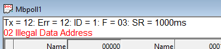
20.1. Modbus Exception Codes
Modbus exceptions are errors returned from the slave device.
| Code | Name | Meaning |
|---|---|---|
01 |
Illegal Function |
The function code received in the query is not an allowable action for the server (or slave). This may be because the function code is only applicable to newer devices, and was not implemented in the unit selected. It could also indicate that the server (or slave) is in the wrong state to process a request of this type, for example because it is not configured and is being asked to return register values. |
02 |
Illegal Data Address |
The data address received in the query is not an allowable address for the server. More specifically, the combination of reference number and transfer length is invalid. For a controller with 100 registers, the PDU addresses the first register as 0, and the last one as 99. If a request is submitted with a starting register address of 96 and a quantity of registers of 4, then this request will successfully operate (address-wise at least) on registers 96, 97, 98, 99. If a request is submitted with a starting register address of 96 and a quantity of registers of 5, then this request will fail with Exception Code 0x02 “Illegal Data Address” since it attempts to operate on registers 96, 97, 98, 99 and 100, and there is no register with address 100. |
03 |
Illegal Data Value |
A value contained in the query data field is not an allowable value for the server (or slave). This indicates a fault in the structure of the remainder of a complex request, such as that the implied length is incorrect. It specifically does NOT mean that a data item submitted for storage in a register has a value outside the expectation of the application program, since the MODBUS protocol is unaware of the significance of any particular value of any particular register. |
04 |
Server Device Failure |
An unrecoverable error occurred while the server (or slave) was attempting to perform the requested action. |
05 |
Acknowledge |
Specialized use in conjunction with programming commands. |
06 |
Server Device Busy |
Specialized use in conjunction with programming commands. |
0A |
Gateway Path Unavailable |
Specialized use in conjunction with gateways, indicates that the gateway was unable to allocate an internal communication path from the input port to the output port for processing the request. Usually means that the gateway is misconfigured or overloaded. |
0B |
Gateway Target Device Failed to Respond |
Specialized use in conjunction with gateways, indicates that no response was obtained from the target device. Usually means that the device is not present on the network. |
20.2. Modbus Poll error messages
| Error message | Meaning |
|---|---|
No Connection |
Neither the serial nor the TCP/IP connection is open. |
Timeout Error |
The response is not received within the expected time. Check the following:
|
Response Error |
The response is not the expected one.
|
Response Length Error |
The CRC/LRC check is OK but the response length is not the expected one. |
CRC Error |
The CRC value of the received response is not correct. |
Write Error |
This is an error reported by the serial driver. This could happen if a USB/RS232/485 converter is used and the USB cable is unplugged. There are 4 types:
Write error using TCP/IP connection is normally caused by lost connection. |
Read Error |
This is an error reported by the serial driver. There are 6 types:
Read error using TCP/IP connection is normally caused by lost connection. |
Insufficient bytes received |
The expected number of bytes has not been received. |
Byte count error |
The byte count in the response is not correct. Compared to the expected. |
Transaction ID error |
It is used for transaction pairing, the MODBUS server copies in the response the transaction identifier of the request. |